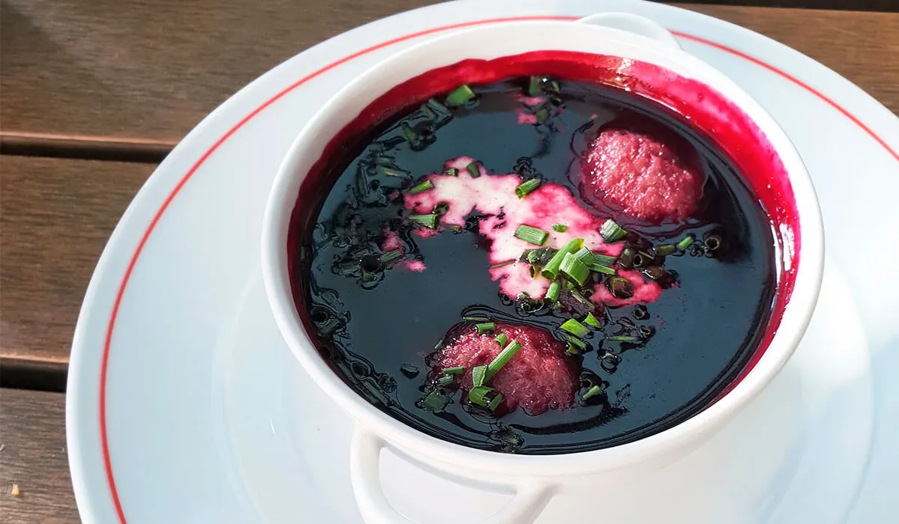

Elderberry soup
Home

Description
The deep red fruit soup is made from the berries of the black elder.
It traditionally comes with small semolina or flour dumplings.
Sour cream and chives can add a special touch to the sweet, fruity flavor.
While this may sound a bit strange at first,
you will be surprised how well they complement the sweet dish.
Ingredients
- 400 g elderberries
- 1 l water
- 30 g starch
- 75 g sugar
- Cinnamon
- Chives
- Sour cream
Steps
- Wash the elderberries and pluck them from the little twigs. Make sure to throw out unripe berries!
- Now, mash the berries with a fork
- Boil the berries and released juice in a pot together with the water, some lemon peel and the clove
- Sieve the mix and contain the seasoned juice in a pot
- Blend the starch with some cold water, add it to the juice and heat up together
- Add sugar and lemon juice and season the soup with a bit of cinnamon according to taste
- Add a spoon of sour cream, besprinkle with some finely cut chives and serve while still hot